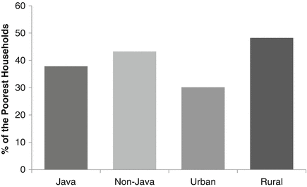

14.1 Introduction
Food is a basic and fundamental human need. Adequate access to food as a human right was established in the United Nations Universal Declaration of Human Rights, which states that “everyone has the rights to a standard of living adequate for the health and well-being of himself and his family, including food” (UN 1948). This concept was further codified by the UN in the assertion that “every man, woman, and child has the inalienable right to be free from hunger and malnutrition in order to develop fully and maintain their physical and mental faculties” (UN 1974). At the global level the first Millennium Development Goals to halve poverty and hunger parallel the mandate of the Universal Declaration of Human Rights. To assure the right to food for everyone, each country needs to achieve food security. Food security exists when all people have physical and economic access to sufficient food to meet their dietary needs for a productive and healthy life at all times (FAO 1983, 2003; Timmer 2000). Accordingly, food security has become one of the main national agendas in most developing countries (Maxwell 1990, 1996; von Braun et al. 1992).
The behavior of poor households should be of policy interest for governments (von Braun et al. 2009), particularly when it comes to the basic need for food. In Indonesia, as in many other developing countries, food is considered one of the most important issues in the economy, as well as in socio-political debate. The national government of Indonesia has been devoted to large-scale endeavors to address food insecurity through the Food Security Council. The Indonesian government also provides food subsidies to poor households for the purpose of maintaining access to basic food items and to achieve a wide range of other socio-economic effects.
Improving household food consumption involves a multitude of issues (von Braun et al. 1992). The effort becomes more complicated when it addresses the poorest and most vulnerable. My aim in this study was to examine these issues and in particular to observe the behavioural characteristics of the poorest households that are interconnected with their food consumption behavior. I also analyzed the responses of the poorest households to changes in fundamental economic variables: income and price. Examining the impacts of current food policy and interventions for the poorest households is vital for understanding how effectively these policies are benefiting the poorest.
14.2 Characteristics of the Poorest
Understanding the characteristics of the poorest is an appropriate starting point for designing policies and programs that improve their welfare. Following Ahmed et al. (2007), the poorest households were defined as the bottom 20 % of the household income range, whose members were living on less than US$0.50/day. I focused on the characteristics of the poorest households that highlight several aspects of the relationships between food policy and household food consumption behavior, including expenditure patterns of food consumption, geographical aspects, and social conditions. Understanding the diversity of food consumption is an important key for addressing the food and nutritional problems of the poor. The poorest households are often found in relatively remote locations that have the least access to public infrastructure and facilities such as roads and markets, which disadvantages them by limiting food variety and increasing food prices. This geographical association with poverty also hinders access to other basic needs, such as health care and education. With respect to human and social capital, members of the poorest households are less likely to be educated and more likely to be systematically excluded from certain opportunities.
14.2.1 To Eat: Spending on Food
Household consumption patterns are considered to be among the most reliable indicators of the economic development and public welfare of a country. As income rises households tend to diversify their diet and increase the consumption of foods with greater nutritional value. The Indonesian Bureau of Statistics (2009) reported changes in household consumption patterns over the last decade. In early 2000 the mean share of Indonesian household budgets spent on food was 58 %, which decreased to around 50 % in 2009. Nonfood consumption increased from 40 to 50 % during the same period. While these consumption changes have been evident at the national level, less change has occurred among the poorest households. The mean monthly income per capita of these households was around 120,000 rupiahs (US$13). Based on data from the Indonesian Family Life Survey (IFLS),1 the poorest households spent more than half of their budget on food (63 %) in 1997, and this figure changed only slightly in 2007 to 61 %, indicating that the poorest spent a relatively higher proportion of their household budget on food than the average household.
Within food expenditures, the “staple foods” category dominated the budgets of the poorest households (Fig. 14.1). The second greatest food expenditure share among the poorest households was for the “meat and fish” category. Dairy products and other foods from animal sources generally have higher nutrient content and better taste, but cost more than alternative foods, therefore poorer households are less likely to be able to afford them.
Fig. 14.1
Consumption by expenditure category among the poorest households in Indonesia (Based on IFLS data)
The expenditure share of the “alcohol and tobacco products” category was higher than for “dairy products” among the poorest households. The Indonesian Consumer Foundation estimated that 70 % of the smokers in Indonesia are poor, pointing out that the poor are the main contributors to government revenue from tobacco taxes (Suara Media 2010). While expenditures on the “vegetables and fruit,” “meat and fish,” and “dairy products” categories have remained stagnant, the increased consumption of “snack and dried foods” and “alcohol and tobacco products” categories indicates that the poorest households spend money on non-nutritious food and other unhealthy alternatives.
Dairy product consumption represented the smallest share of the budget among the poorest households. Dairy products are important sources of micronutrients, especially calcium, and regular consumption of dairy products reduces the risk of malnutrition. The low level of dairy product consumption is likely associated with the low purchasing power of the poorest households, and it is widely known that consumption choices of the poor are greatly influenced by price. The typically high prices for dairy products in Indonesia are associated with the need to import ingredients for their production. Figure 14.2 presents expenditures on dairy products in relation to the number of household children under the age of five. In contrast to wealthier and the middle-income households that consumed more dairy products as the number of young children increased, the poorest households exhibited the reverse pattern.
Fig. 14.2
Household expenditures on dairy products in relation to the number of children under the age of five among the highest and lowest household income groups in Indonesia (Based on IFLS data)
14.2.2 Where Do the Poorest Live?
Similar to patterns of distribution in other developing countries, the majority of the poorest households in Indonesia are located in rural areas and on the outer islands (Fig. 14.3).2 The rural poor households are typically dependent on agricultural livelihoods and have limited access to land. According to related studies the poorest households in urban areas are typically engaged in informal market sector livelihoods such as being self-employed or operating micro-businesses (Ahmed et al. 2009). The level of development in Indonesia is highly imbalanced, being particularly greater in urban relative to rural areas and concentrated on the island of Java relative to the rest of the country (Hill 1992; Akita 2003). Access to markets (products and labor) is also greater in urban areas and on Java. As the capital and government administration centers are located in Java, the distribution of social safety-net program activities are also frequently subject to spatial biases favoring Java relative to the rest of the country. For example the Rice for the Poor program was implemented first in Java and the program’s distribution was imbalanced in favor of the island until the mid-2000s (Suryahadi and Sumarto 2003), although in that study it was recognized that the higher safety-net coverage might be associated with greater effects of the 1997 financial crisis in urban areas of Java relative to the rest of the country. Nevertheless the imbalanced execution of food security policies prevents benefits from reaching the nation’s poorest households.

Fig. 14.3
Relative distributions of the poorest households in Indonesia: 2007 (Based on IFLS data)
Household food insecurity and malnutrition are not only associated with food intake problems, but are also linked with environmental conditions. The quality of water and sanitation services can significantly affect household health. Sanitary environmental conditions are strongly associated with unhindered childhood growth and a lower prevalence of diarrhea (Packnawin-Mock et al. 2000; Cameron and Shah 2010). Figure 14.4 presents the percentages of the poorest households with direct access to drinking water. The poorest households have the least access to improved sanitation and drinking water (Cameron and Shah 2010). Urban poor households had better access to water and sanitation infrastructure relative to the rural poor.
Fig. 14.4
Potable water access among the poorest households in Indonesia: 2007 (Based on IFLS data)
14.2.3 Education
The education level of the household head had a positive and significant association with the consumption of “vegetables and fruit,” “meat and fish,” and “dairy products,” which implies that more education contributes to the consumption of more nutritious foods. In contrast household head education had a negative and significant association with the consumption of “staple foods” and “alcohol and tobacco products.” Based on the IFLS data, the heads of the poorest households were the least educated among all households, nearly all of them had not completed elementary education. Compared to the other households, the poorest and least educated households consumed greater shares of “staple foods,” “alcohol and tobacco products,” and “snack and dried foods” (the latter often with image-bearing packaging to enhance marketing), but consumed lesser shares of “dairy products.”
The fact that the poorest households were also the least educated may affect consumption behavior in several ways. Limited education may be associated with limited understanding of dietary nutrition. The poorest households also appear to be responsive to food marketing efforts, which tends to promote an idealized image of consumers that is consistent with popular cultural fashion. As a result this group might be less attracted to alternative foods that may be superior in nutrient content. Anecdotally, the poorest and least educated households tend to be more culturally traditional, which might also favor consumption of staple foods (Fig. 14.5).
Fig. 14.5
Percentages of household expenditures among selected good categoris by education level of the household head in Indonesia (Based on IFLS data)
14.2.4 Social Networks: Participation in Community Activities
In many studies the poorest demographics are characterized as excluded from and less participative in society. Are the poorest households socially excluded in Indonesia? Community activities in Indonesia are an excellent laboratory to observe the social behavior of the poor. Previous studies in Indonesia have found that selectivity exists in community participation, and that that marital status and education were strong determinants of social engagement (Grootaert 1999; Beard 2003; Beard and Cartmill 2007). Another study found that participation at the community level increased the likelihood of receiving government aid during economic crises and of employment for the household head (Perdana 2006).
There are various types of community participation at the village level in Indonesia, many of which are specific to gender and age. Anti-poverty development programs such as the Social Safety Net Program, the Kecamatan Development Program, the Urban Poverty Program, the Rice for the Poor program, the unconditional cash transfer program, and other programs are discussed in community meetings. These meetings provide forums for the discussion of activities such as program socialization and planning, proposal preparation, funding decisions, and program implementation. Local meetings are attended by several elements of the communities, such as local legislative bodies, local government staff, and representatives of women and youth groups. Among the various community activities is a traditional reciprocal form of social capital known as gotong royong (voluntary labor) (Sullivan 1992; Beard 2005). This activity is originally from Java and originated from the cooperative action required for wet rice production (Beard 2005). Based on the IFLS data the poorest households were not entirely socially excluded (Fig. 14.6). About 50 % of poorest households participated in religious activities and gotong royong in their villages. Nevertheless when it came to monetary types of participation or more formal activities such as rotating savings and community meetings, the poorest households were less represented than households in the rest of the income range.
Fig. 14.6
Participation of the poorest households in community activities in Indonesia (Based on IFLS data)
Given the fact that the poorest households participated in formal communal activities, socialization related to access to development programs and empowering the poorest could be facilitated by working through these types of community activities. Although relatively less formal, participation in religious and voluntary labor activities facilitates the sharing of information among villagers and thus creates social capital. This social capital in turn creates spillover benefits through improved access to nonfinancial resources for the poorest households.
14.3 The Responsiveness of the Poorest Households to Income and Price Changes
As reported above, the poorest households consumed greater shares of good from the “staple foods” and “tobacco or alcohol products” categories, and lesser shares of nutrient-rich foods from the “meat and fish” or “dairy products” cateories than other households. An important aspect of understanding the behavior of the poorest households for policy making purposes is their responsiveness to changes in income and prices, which can be observed using empirical data from the surveys. How the poor respond to changes in prices and income should help direct food policy with respect to policy emphasis on either income or price, or on a combination of the two (Sadoulet and de Janvry 1995). Particularly when policies are needed to leverage nutrition and health, side interventions should be considered. Policy to improve household food consumption should therefore be grounded on sound knowledge of household responses to these key determinants of food consumption.
Changes in consumption among the poorest households in response to changes in income can be evaluated through expenditure elasticity. Elasticity estimates for expenditures of the poorest households on eight consumer goods categories are presented in Table 14.1. All of the expenditure elasticity estimates were calculated based on the IFLS data using the Quadratic Almost Ideal Demand System (QUAIDS), specific demand system model. For the “vegetables and fruit,” “oils,” and “snack and dried foods” categories, the expenditure elasticity estimates were close to unity and therefore these goods are deemed as necessities, whereas “staple foods,” “meat and fish,” “dairy products,” and “alcohol and tobacco products” categories were all classified as luxuries. Expenditure elasticity for the alcohol and tobacco products category was the highest. For this category the model indicated that a 10 % increase in total food expenditures would lead to a 13 % share increase in consumption. Comparing “staple foods” expenditures across annual surveys, these appeared to be elastic for the poorest households in 1997, but exhibited less elasticity in subsequent annual surveys. This finding was consistent with Bennet’s law, which states that households switch consumption from cheaper to more expensive calorie sources as income rises (Timmer et al. 1983; Fuglie 2004). For the poorest households, the “dairy products” category remained expenditure elastic for over a decade. As expenditures on tobacco and alcohol products increased over the last decade and considering the elastic nature of expenditures in this category, caution should be taken before drawing conclusions due to the possible crowding-out effect of alcohol and tobacco product expenditures on the consumption of more nutritious food items.
Table 14.1
Expenditure elasticity estimates for the poorest households across annual surveys in Indonesia (Based on IFLS data)
Expenditure categories | Total | 1997 | 2000 | 2007 |
|---|---|---|---|---|
Staple foods | 1.0152 | 1.1232 | 0.9129 | 0.9677 |
(0.0424) | (0.0601) | (0.0714) | (0.4189) | |
Vegetables and fruit | 0.9967 | 0.9089 | 1.0640 | 0.9804 |
(0.0639) | (0.0983) | (0.1061) | (0.3990) | |
Meat and fish | 1.0358 | 0.9333 | 1.1085 | 1.2387 |
(0.0549) | (0.0844) | (0.0855) | (0.6125) | |
Dairy products | 1.2800 | 1.4963 | 1.0663 | 1.2389 |
(0.1240) | (0.2005) | (0.1948) | (0.2612) | |
Oils | 0.7960 | 0.7757 | 0.8645 | 0.7814 |
(0.0712) | (0.1044) | (0.1264) | (0.1671) | |
Alcohol and tobacco products | 1.3568 | 1.1909 | 1.5788 | 1.4227 |
(0.1327) | (0.2168) | (0.1669) | (1.2463) | |
Snack and dried foods | 0.9091 | 0.8115 | 0.9752 | 0.6652 |
(0.1021) | (0.1743) | (0.1595) | (0.2463) | |
Other foods | 0.9138 | 0.9118 | 0.8666 | 1.0573 |
(0.0465) | (0.0646) | (0.0779) | (0.2760) |
Price elasticity estimates reflect the responsiveness of consumption to changes in prices. Table 14.2 presents the own- (with respect to changes in the price of goods within each category) and cross-price (with respect to changes in the prices of goods from other categories) elasticity estimates for the poorest households based on a QUAIDS analysis of the IFLS data. Similar to expenditure elasticity, price elasticity for the “alcohol and tobacco products” category showed the most substantial response to price changes. The model estimated an elasticity value of 1.25 in absolute magnitude, therefore predicting that if the prices for alcohol and tobacco products increase by 10 %, then consumption would fall by 12.5 %. The poorest households also exhibited price elasticity for the “dairy products” and “meat and fish” categories. The own-price elasticity of the dairy products category was similar to that for “alcohol and tobacco products,” indicating that price changes for “dairy products” affected consumption less substantially than price changes for “alcohol and tobacco products.” The price elasticity value for the “staple foods” category was nearly close to unity among the poorest households, indicating that the demand for staple foods is relatively responsive to price changes.
Table 14.2
Own-price and cross-price elasticity value estimates for the poorest households in Indonesia by expenditure category (Based on IFLS data)
Expenditure categories | Staple foods | Vegetables and fruit | Meat and fish | Dairy products | Oils | Alcohol and tobacco products | Snack and dried foods |
|---|---|---|---|---|---|---|---|
Staple foods | −0.9473 | −0.0641 | 0.1013 | −0.0383 | −0.0126 | −0.0678 | −0.0061 |
(0.1081) | (0.0344) | (0.0554) | (0.0229) | (0.0269) | (0.0476) | (0.0419) | |
Vegetables and fruit | −0.1920 | −1.0703 | 0.2446 | 0.0324 | −0.0474 | −0.0586 | −0.0117 |
(0.1103) | (0.0654) | (0.0703) | (0.0293) | (0.0323) | (0.0571) | (0.0552) | |
Meat and fish | 0.2344 | 0.1731 | −1.1402 | −0.0286 | 0.0017 | −0.0651 | −0.1367 |
(0.1294) | (0.0536) | (0.1510) | (0.0495) | (0.0530) | (0.0498) | (0.0538) | |
Dairy products | −0.5949 | 0.0392 | −0.2008 | −1.2391 | 0.2777 | 0.1606 | −0.0153 |
(0.3098) | (0.1446) | (0.2825) | (0.1786) | (0.1382) | (0.1843) | (0.1234) | |
Oils | −0.0121 | −0.0213 | 0.0408 | 0.1399 | −0.7757 | −0.0878 | 0.0348 |
(0.1673) | (0.0868) | (0.1385) | (0.0636) | (0.0981) | (0.0917) | (0.0634) | |
Alcohol and tobacco products | −0.2983 | −0.2327 | 0.3988 | 0.0608 | −0.1042 | −1.2450 | 0.0135 |
(0.2416) | (0.1323) | (0.1724) | (0.0748) | (0.0811) | (0.1868) | (0.1094) | |
Snack and dried foods | 0.0159 | 0.0227 | −0.1317 | 0.0057 | 0.0094 | 0.0300 | −0.7680 |
(0.1148) | (0.0646) | (0.0619) | (0.0241) | (0.0279) | (0.0523) | (0.0954) |
Examination of the relationships among these consumption categories through the cross-price elasticity estimates revealed a mixture of complementary and substitutive relationships. Cross-price elasticity values were generally much lower than own-price elasticity values, implying that consumption of each category among the poorest households was more responsive to changes in the price of goods within each category. Though all cross-price elasticity estimates were found to be inelastic, the notion of substitutes and complements plays a significant role in understanding consumption patterns. The poorest households somewhat freely substituted between the “meat and fish” and “vegetables and fruit” categories, suggesting that they seem to have similar roles in their diet. The comparison of the “vegetables and fruit” category prices to those of “meat and fish” yielded a demand elasticity value of 0.24, which predicts that a 10 % increase of vegetables and fruit prices would lead to a 2.4 % increase in the consumption of meat and fish.
A similar relationship was also found between the “meat and fish” and “staple foods” categories. The model predicted that the poorest would increase their staple foods consumption by 2.3 % if the price of meat and fish increased by 10 %. This finding suggests that poor households would cut expenditures on nutrient-rich foods such as green leafy vegetables or meat and fish, and shift to cheaper calorie goods such as staple foods. During the 1997 financial crisis there were dramatic price increases for most consumer goods, particularly for nutrient rich foods belonging to the “meats and fish,” “dairy products,” and “vegetables and fruits” categories, which had negative consequences on the nutritional welfare of Indonesian households.
Another striking substitutive effect, though inelastic, was found in the relationship between the demand for goods from the “alcohol and tobacco products” and “meat and fish” categories. The model predicted that if alcohol and tobacco product prices were to rise by 10 % then meat and fish demand would increase by 3.0 %. A substitutive relationship between “alcohol and tobacco products” with “meat and fish” is challenging for national food policy. What is important to poor households with respect to alcohol and tobacco products demand is the price. Only when the price of alcohol and tobacco products significantly increased, was a shift to greater meat and fish consumption among poor households predicted. Nevertheless given the large expenditure share of alcohol and tobacco consumption and its elasticity, it should be cautiously considered. The loss in terms of nutrition could be considerable due to the possible crowding-out effect of alcohol and tobacco products expenditures on those for nutrient rich foods such as eggs, meats, dairy products, and therefore household well-being would also likely be affected by decreases in nonfood expenditures such as education and medical expenses (BAPPENAS 2006; Mukherjee 2006).
14.4 The Poorest and the Food Subsidy Program
The Indonesian government provides food subsidies to poor households for the purpose of maintaining access to basic food items. Indonesia operates a food security program called RASKIN, which is an abbreviation of beras miskin, literally meaning “rice for the poor.” Historically the program was part of the Social Safety Net introduced by the government in 1998 just after the financial crisis hit Indonesia in mid-1997. The purpose of this program was to ensure that poor households (both the chronically poor and those newly poor due to the crisis) were able to access basic food at affordable prices (Sumarto 2006). Eligible households were selected by the National Family Planning Agency (Badan Koordinasi Keluarga Berencana Nasional [BKKBN]).
Tabor and Sawit (2001) pointed out that the program authorities were aware that the BKKBN welfare criteria were not designed to identify food insecure households. The BKKBN evaluated households based on the following indicators: whether all household members regularly consumed at least two meals a day, whether household members had different sets of clothes for different activities (home, work, school, and public), whether houses had dirt-floors, whether households were able to bring their children to health centers to receive medical treatment when they were sick, whether the households used family planning methods, and whether household members were able to practice their religious observances. The program provided highly subsidized rice at a price of Rp 1,000/kg, compared to average market prices of Rp 3,000/kg. The amount of rice that could be purchased by beneficiary households was originally 20 kg per month, but this was reduced to between 10 and 20 kg in 2000 (Tabor and Sawit 2005; SMERU 2008).
Since the program implementation was rushed and the eligibility criteria were not designed properly (Tabor and Sawit 2001), leakage has been a significant problem with the Rice for the Poor program. Table 14.3 presents indicators of the effectiveness of the food security program targeting. The percentage of households that received benefits from the program fell as household per capita expenditures rose in both Java and the rest of the country. Only about 30 % of the Rice for the Poor program beneficiary households were among the poorest 20 % of society. The targeting performance was slightly better outside of Java where almost 60 % of the program beneficiaries were among the poorest 40 % of households.
Table 14.3
Food security program targeting performance by income and region in Indonesia (Based on IFLS data)
Per capita expenditure quintiles | Percentage of households | ||
|---|---|---|---|
Java | Outside Java | All | |
1st (lowest) | 28.58 | 32.59 | 29.56 |
2nd | 25.33 | 26.91 | 25.71 |
3rd | 19.99 | 21.52 | 20.37 |
4th | 16.55 | 12.56 | 15.57 |
5th (highest) | 9.56 | 6.43 | 8.79 |
Total | 100 | 100 | 100 |
Strikingly almost 20 % of the program beneficiaries were from the highest income quintile households, even though the program was intended to help the poor. The misadministration of the program was also evident in Java, where almost 10 % of the wealthiest households benefitted from the program. This indicated a failure of the food security program operators to provide oversight of the selection of beneficiaries. Improved targeting would be an effective means for the Indonesian government to improve program benefits for the poor, but the costs and feasibility of more narrow targeting need to be assessed in order to identify economically optimal targeting methods.
The results presented in Table 14.3 show that even a targeted social protection effort for the poor can be subject to errors of inclusion. The errors of inclusion in the implementation of the Rice for the Poor program have several implications. Based on the latest IFLS community data, the program was the most well-known among the poorest and was considered the most beneficial social protection program. However, it was also the second most criticized program due to the lack of program socialization and a suitable mechanism for filing complaints.3 There were other consequences related to the limited program impact on the poorest households. In a similar case of a conditional transfer program in Honduras, there was no positive impact on household nutritional status due to implementation problems (Adato and Hoddinott 2009). In the case of the Rice for the Poor program in Indonesia, targeting seems to be a bottleneck that limited the program’s impacts.
The evidence that the Rice for the Poor program had limited impacts on the poorest is presented in Table 14.4. The program’s impacts on food consumption were evaluated at the household level after program implementation and the resulting changes in consumption are presented. The program benefitted the poorest households by increasing meat consumption by 50 % at the time of post-exposure program disbursement. “Dairy products” category expenditures increased by about 90 % among the poorest households. Though animal source foods such as meat and dairy products contain more nutrients, the increased consumption of these categories by the poorest households was attributed to a shift to “better-tasting” food (Jensen and Miller 2008; Banerjee and Duflo 2011).
Table 14.4
Average treatment effects on food and nonfood consumption by the poorest households in Indonesia (Based on IFLS data)
Outcomes | Current consumption | Consumption change |
|---|---|---|
Total food expenditures | 0.008 | 0.029 |
(0.032) | (0.047) | |
Rice | 0.181 | 0.055 |
(0.231) | (0.300) | |
Other staple foods | 0.097 | −0.198 |
(0.167) | (0.254) | |
Dairy products | 0.283 | 0.889*** |
(0.368) | (0.388) | |
Meat | 0.649*** | 0.278 |
(0.212) | (0.220) | |
Fish | 0.298 | 0.228 |
(0.292) | (0.320) | |
Alcohol and tobacco products | 0.475 | 0.204 |
(0.358) | (0.375) | |
Nonfood expenditures | −0.003 | 0.049 |
(0.037) | (0.055) | |
Medical | 0.269 | 0.532 |
(0.281) | (0.362) | |
Education | −0.272 | −0.025 |
(0.372) | (0.353) |
As previously mentioned, the food security program seems to have had many loopholes. By design the Rice for the Poor program provided generous support to the households that were suffering most from the crisis. Although it was found that the program reached the intended households, the mistargeting of households was also clear and lead to unintended program effects. Since the poorest households have limited understanding of dietary nutrition, accompaniment of the food subsidy intervention seems to be a prudent option. Changing food consumption behavior of the poor might require time and education rather than be an immediate response to improved food availability. In addition, the fact that extra resources from cash transfers are often used to purchase unhealthy goods that are consumed by adult males such as cigarettes is another indication that government intervention to improve household food consumption should consider an accompanying educational component.
Although the Rice for the Poor program beneficiaries were mostly determined by BKKBN welfare criteria, local village authorities were responsible for the distribution of benefits at the village level. Addressing the political and bureaucratic causes of exclusion might be an important pathway towards more effective targeting (von Braun et al. 2009). The Rice for the Poor program had little bottom-up process in the implementation, particularly the involvement of households as the ultimate point of distribution. Analysis of the IFLS community data revealed that the village head and associated staff, along with the BKKBN cadre and the head of neighborhood associations determined which households were eligible for the Social Security Net programs, including Rice for the Poor. The data analysis results further revealed that only 50 % of the villages had mechanisms in which a household could have applied to be a program recipient if they felt that they qualified for receiving subsidized rice but were not selected. The long bureaucratic distribution process combined with local and cultural contexts might have restricted the eligibility of some community members, particularly the ones with the lowest local socioeconomic status, from being involved in determining the program’s application.
Many studies have highlighted the occurrence of elite capture in development programs and have recommended community-based development program approaches to reduce this problem (Mansuri and Rao 2004; Beard and Dasgupta 2006; Fritzen 2007). This problem appears to have affected the Rice for the Poor program. Making the program more reflective of people’s needs and involving bottom-up participation are potential methods of improving the design of food security programs, just as they have benefitted other community-driven development programs (Rao and Ibanez 2005). An inclusive and transparent process of recipient eligibility identification is one of the operational aspects that would help mitigate this problem.
14.5 Conclusion
Understanding the food consumption behavior of the poorest and their responsiveness to price and income changes are vital for the improvement of their nutritional welfare. It was found that the poorest households’ consumption behavior will have impacts on the effectiveness of food subsidy efforts, and should therefore be taken into account when such programs are designed to avoid unintended or detrimental effects. In order to maximize the nutritional benefits of food subsidy programs, side-interventions such as nutrition education should be considered. Food subsidy programs like Rice for the Poor might also benefit through a focus on gender dimensions. Some studies highlight the growing recognition that public welfare efforts that specifically target women are more likely to perform better in terms of household welfare outcomes (Quisumbing and de la Briere 2000; Doss 2005; Quisumbing and McClafferty 2006).
Food policies in Indonesia are still evolving as food issues respond to the complex dynamics and uncertainties of multiple factors, not only economic aspects, but also social and political dimensions. In terms of social inclusion of the poorest households, applying conditionality on food program recipients might be another effective policy approach to improve the performance of public assistance efforts. Understanding the fact the poorest households are involved in less formal communal activities, side interventions for the poorest household could consider a beneficiary selection approach featuring these activities. Target households of food assistance programs could be required to attend community-based nutritional education classes in order to receive assistance to broaden the welfare benefits of government interventions. Simultaneously, food policies that involve local-level participation and that accommodate local contexts might provide support not only in terms of monetary value, but also in nonmonetary terms such as stimulating collective action and public empowerment.
References
Adato M, Hoddinott J (2009) Conditional cash transfer programs: a ‘magic bullet’ for reducing poverty? In: von Braun J, Hill RV, Pandya-Lorch R (eds) The poorest and hungry: assessments, analyses, and actions. International Food Policy Research Institute, Washington, DC, pp 299–306
Ahmed AU, Hill RV, Smith LC, Wiesmann DM, Frankenberger T (2007) The world’s most deprived: characteristics and causes of extreme poverty and hunger, 2020 discussion paper 43. International Food Policy Research Institute, Washington, DC
Ahmed AU, Quisumbing AR, Nasreen M, Hoddinott J, Bryan E (2009) Comparing food and cash transfers to the ultra poor in Bangladesh, Research monograph no 163. International Food Policy Research Institute, Washington, DC
Akita T (2003) Decomposing regional income inequality in China and Indonesia using two-stage nested Theil decomposition method. Ann Reg Sci 31(7):55–77CrossRef
Banerjee A, Duflo E (2011) Poor economics: a radical rethinking of the way to fight global poverty. Public Affairs, New York
BAPPENAS (2006) Rancangan Pangan dan Gizi 2006–2011 (Food and nutrition platform 2006–2011). Badan Perancanaan Pembangunan Nasional (The National Development Planning Agency), Jakarta
Beard VA (2003) Learning radical planning: the power of collective action. Plan Theory 2(1):13–35CrossRef
Beard VA (2005) Individual determinants of participation in community development in Indonesia. Environ Plan C Gov Policy 23(1):21–39CrossRef
Beard VA, Cartmill RS (2007) Gender, collective action and participatory development in Indonesia. Int Dev Plan Rev 29(2):185–213CrossRef
Beard VA, Dasgupta A (2006) Collective action and community-driven development in rural and urban Indonesia. Urban Stud 43(9):1451–1468CrossRef
Cameron L, Shah M (2010) Scaling up rural sanitation: findings from the impact evaluation baseline survey in Indonesia. Technical paper, water and sanitation program, World Bank, Washington, DC
Doss C (2005) The effects of intrahousehold property ownership on expenditure patterns in Ghana. J Afr Econ 15(1):149–180CrossRef
FAO (1983) World food security: a reappraisal of the concepts and approaches. Food and Agriculture Organization of the United Nations, Rome
FAO (2003) Trade reform and food security: conceptualizing the linkages. Food and Agriculture Organization of the United Nations, Rome. ftp://ftp.fao.org/docrep/fao/005/y4671e/y4671e00.pdf. Accessed 15 Feb 2012
Fritzen SA (2007) Can the design of community-driven development reduce the risk of elite capture? Evidence from Indonesia. World Dev 35(8):1359–1375CrossRef
Fuglie KO (2004) Challenging Bennett’s law: the new economics of starchy staples in Asia. Food Policy 29:187–202CrossRef
Grootaert C (1999) Social capital, household welfare and poverty in Indonesia, Policy research working paper no 2148. World Bank, Washington, DCCrossRef
Hill H (1992) Regional development in a boom and bust petroleum economy: Indonesia since 1970. Econ Dev Cultur Change 40(2):351–379CrossRef
Indonesian Bureau of Statistics (2009) Statistical year book of Indonesia 2009. Indonesian Bureau of Statistics, Jakarta
Jensen RT, Miller NH (2008) Giffen behavior and subsistence consumption. Am Econ Rev 98(4):1553–1577CrossRef
Mansuri G, Rao V (2004) Community-based and driven development: a critical review. World Bank Res Obs 19(1):1–39CrossRef
Maxwell S (1990) Food security in developing countries: issues and options for the 1990s. IDS Bull 21(3):2–13CrossRef
Maxwell S (1996) Food security: a post-modern perspective. Food Policy 21(1):155–170CrossRef
Mukherjee N (2006) Voices of the poor: making the services work for the poor in Indonesia. World Bank, Washington, DC
Packnawin-Mock J, Jarvis L, Jahari AB, Husaini MA, Pollit E (2000) Community-level determinants of child growth in an Indonesian tea plantation. Eur J Clin Nutr 54:28–42CrossRef
Perdana AA (2006) Better together or not? Community participation, consumption smoothing and household head employment in Indonesia, Development economics working paper no 777. East Asian Bureau Economic Research, Canberra
Quisumbing AR, de la Briere B (2000) Women’s assets and intrahousehold allocation in rural Bangladesh: testing measures of bargaining power, FCND discussion paper 86. International Food Policy Research Institute, Washington, DC
Quisumbing AR, McClafferty B (2006) Food security in practice: using gender research in development. International Food Policy Research Institute, Washington, DC
RAND (2010) The Indonesia Family Life Survey – IFLS4 public release. RAND Corporation, Santa Monica. http://www.rand.org/labor/FLS/IFLS.html. Accessed 22 Dec 2010
Rao V, Ibanez AM (2005) The social impacts of social funds in Jamaica: a “participatory econometric” analysis of targeting, collective action, and participation in community-driven development. J Dev Stud 41(5):788–838CrossRef
Sadoulet E, de Janvry A (1995) Quantitative development policy analysis. John Hopkins University Press, Baltimore/London
SMERU (2008) The effectiveness of the Raskin program. Social Monitoring and Early Response Unit, Jakarta. http://www.smeru.or.id/report/research/raskin2007/raskin2007_eng.pdf. Accessed 23 Mar 2008
Suara Media (2010) Pengguna Rokok Mayoritas Orang Miskin – smokers are mostly the poor. Suara Media, Jakarta. http://www.suaramedia.com/berita-nasional/19121-lm3-heran-pengguna-rokok-mayoritas-orang-miskin.html. Accessed 10 Sept 2010
Sullivan J (1992) Local government and community in Java: an urban case study. Oxford University Press, New York
Sumarto S (2006) Social safety net: Indonesia. Policy brief 6, Overseas Development Institute, London. http://www.odi.org.uk/resources/download/1071.pdf. Accessed 23 Mar 2008
Suryahadi A, Sumarto S (2003) Evolution of poverty during the crisis in Indonesia. Asian Econ J 17(3):221–241CrossRef
Tabor SR, Sawit MH (2001) Social protection via rice: the OPK rice subsidy program in Indonesia. Dev Econ XXXIX(3):267–294
Tabor SR, Sawit MH (2005) RASKIN: a macro-program assessment. BULOG, Jakarta. http://www.bulog.co.id/old_website/data/doc/20070321RASKIN_Executive_Summary_for_Distribution.pdf. Accessed 15 Feb 2009
Timmer PC (2000) The macro dimensions of food security: economic growth, equitable distribution, and food price stability. Food Policy 25:283–295CrossRef
Timmer PC, Falcon WP, Pearson SR (1983) Food policy analysis. John Hopkins University Press, Baltimore
United Nations (1974) Universal declaration on the eradication of hunger and malnutrition. United Nations High Commissioner for Human Rights, Geneva. http://www2.ohchr.org/english/law/malnutrition.htm. Accessed 20 Jan 2012
United Nations General Assembly (1948) Universal declaration of human rights. United Nations, New York. http://www.unhcr.org/refworld/docid/3ae6b3712c.html. Accessed 20 Jan 2012
von Braun J, Bouis H, Kumar S, Pandya-Lorch R (1992) Improving food security of the poor: concept, policy, and programs. International Food Policy Research Institute, Washington, DC
von Braun J, Hill RV, Pandya-Lorch R (2009) The poorest and the hungry: a synthesis of analyses and actions. In: von Braun J, Hill RV, Pandya-Lorch R (eds) The poorest and hungry: assessments, analyses, and actions. International Food Policy Research Institute, Washington, DC, pp 1–61
Footnotes
1
IFLS is a longitudinal socioeconomic and health survey that has been conducted in 1993, 1997, 2000, and 2007 (RAND 2010). IFLS collects data on individual respondents, their families, their communities, and the health and education facilities they use. In 1997 the IFLS sample represented approximately 83 % of the Indonesian population living in 13 provinces.
2
Java is one of the principal islands of Indonesia and the most densely populated. It is where the capital city is located and the economic and governmental center of the country.
3
According to the IFLS community data from 2007 the unconditional cash transfer and the Rice for the Poor program received the most complaints from communities. Among 321 enumeration areas, complaints about the unconditional cash transfer and the Rice for the Poor programs were made by 69 and 16 % of the areas respectively. Despite this level of complaints, more than 60 % of the areas reported that the Rice for the Poor program was the most accepted program because it indeed helped the poor.